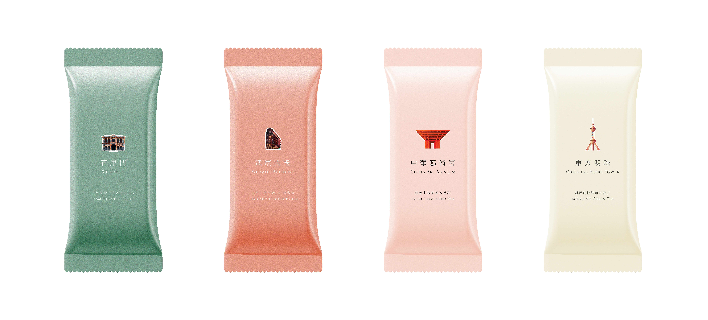
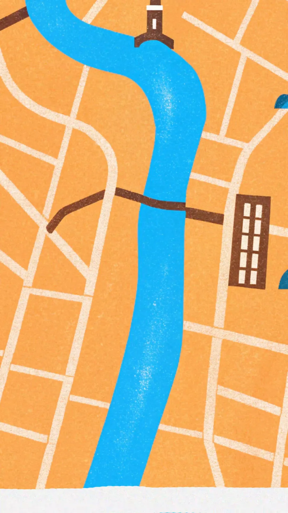

Zhixing Zhang
Arts
Career
About
Contact
Career
01
Shanghai Gift: Shanghai Architecture Cultural-Creative Tea Bag Design
Packaging Design / Cultural Product / Exhibition

02
Event Photography
Editorial / Institutional Events / Documentation
03
Stillness
Urban Photography / Night / Atmosphere
04
AIGC Title Sequence
Recraft / Adobe After Effects / 2025
